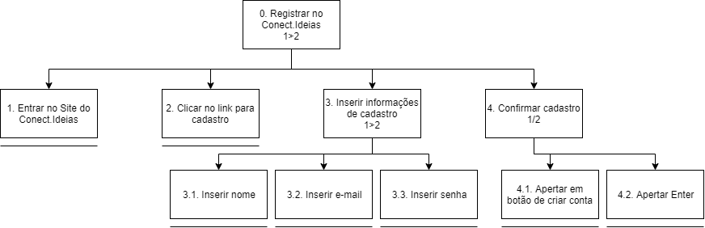
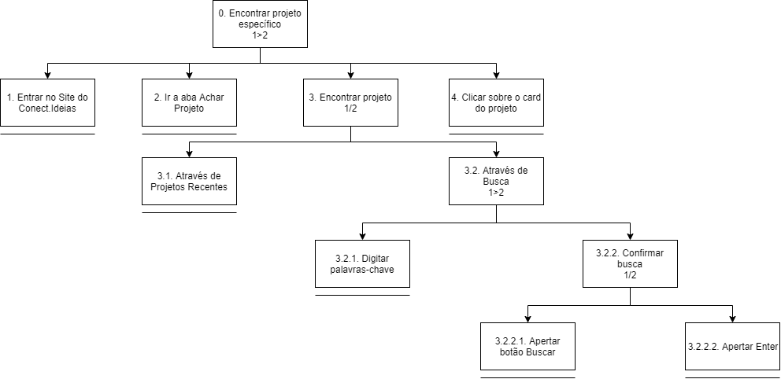
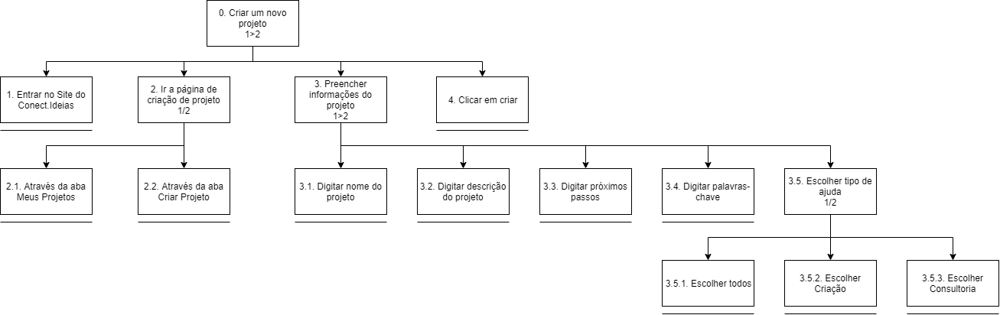
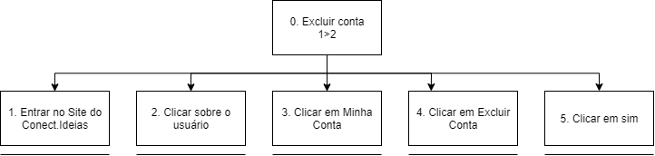

Análise Hierárquica de Tarefas
A Análise Hierárquica de Tarefas, abreviada como AHT, foi desenvolvida na década de 1960, tendo como intuito inicial de identificar as necessidades de treinamento.
A ideia básica desta análise é relacionar o que as pessoas fazem - sendo essas as tarefas - com o por que elas fazem e as suas consequências, em caso de erros. O ponto de partida desta análise são os objetivos do usuário, onde são identificadas as principais tarefas e subtarefas associadas à conclusão desse objetivo.
Será utilizada a representação AHT encontrada em Barbosa e Silva, 2010.
Versões
| Versão | Detalhes | Data |
|---|---|---|
| 1.0 | Versão inicial: Criação de projeto, busca de projeto e registro | 05/11/2019 |
| 1.1 | Adição de exclusão de conta e correção de versionamento | 05/11/2019 |
| 1.2 | Adição de referências | 05/11/2019 |
| 1.3 | Correção de erros nos diagramas | 05/11/2019 |
| 1.4 | Tabela de Encontrar Projeto Específico | 05/11/2019 |
| 1.5 | Tabela de Remoção de Conta. | 05/11/2019 |
| 1.6 | Adição da tabela de Criação de projeto | 05/11/2019 |
| 1.7 | Adição da tabela de Registro | 05/11/2019 |
Participantes
- Eduardo Lima
- Luís Henrique
- Samuel Pereira
Registro

| Operações | Problemas e recomendações |
|---|---|
| 0. Registrar no Meraki 1>2 | Input: Nome, E-mail e Senha.
Feedback: Acesso à nova conta e página de Editar perfil.
Plano: Criar nova conta com os dados informados. Problema: Falta de verificação das informações e confirmação da criação. |
| 1. Entrar no site Meraki | Plano: Acessar a página inicial do site. |
| 2. Clicar no link para cadastro | Plano: Acessar página de cadastro. |
| 3. Inserir informações de cadastro 1/2 | Plano: Informar as informações de cadastro |
| 3.1. Inserir nome | Plano: Informar o nome da nova conta. |
| 3.2. Inserir E-mail | Plano: Informar o E-mail da nova conta. |
| 3.3. Inserir senha | Plano: Definir senha da nova conta. |
| 4. Confirmar cadastro 1/2 | Plano: Efetuar a criação da nova conta. |
| 4.1. Apertar em botão de criar conta | Plano: Criar nova conta com as informações informadas |
| 4.2. Apertar Enter | Feedback: Acessar a página de editar perfil.
Plano: Finalizar cadastro. |
Encontrar projeto específico

| Operações | Problemas e recomendações |
|---|---|
| 0. Encontrar projeto específico 1>2 | Input: Especificações do projeto desejado, como autor ou nome. Feedback: Acesso ao projeto desejado. Plano: Navegar pelos projetos ate chegar no desejado. Recomendação: Encontrar o projeto desejado o mais eficientemente possivel. |
| 1. Entrar no site do Meraki | Input: URL do site. |
| 2. Ir a aba Achar Projeto | Plano: Especificar projeto desejado. |
| 3. Encontrar projeto 1/2 | Input: Especificações do projeto. |
| 3.1. Através de projetos recentes | Input: Atividade recente no site. Plano: Encontrar um projeto que foi visualizado recentemente. |
| 3.2. Através de busca 1>2 | Plano: Especificar projeto desejado. Recomendação: Especificar as caracteristicas mais importantes somente, para ganhar tempo. |
| 3.2.1. Digitar palavras chave | Input: Palavras chave do projeto. |
| 3.2.2. Confirmar busca 1/2 | Plano: Obter projetos de acordo com as especicacoes. |
| 3.2.2.1. Apertar botao Buscar | Feedback: Vizualizar todos os cards que condizem com as especificacoes. |
| 3.2.2.2. Apertar botao Enter | Feedback: Vizualizar todos os cards que condizem com as especificacoes. |
| 4. Clicar sibre o card do projeto | Plano: Encontrar o card procurado. |
Criar um novo projeto

| Operações | Problemas e recomendações |
|---|---|
| 0. Criar um novo projeto 1>2 | Input: nome do projeto, descrição, próximos passos, palavras-chave e tipo de ajuda.
Feedback: Tela de criação de novo projeto aparece.
Plano: Informar dados e criar projeto com os dados enviados. Problema: Ao criar projeto, não possui feedback do processo. Recomendação: Redirecionar o usuário à página de Meus projetos. |
| 1. Entrar no site Meraki | Plano: Informar credenciais e entrar na respectiva conta. |
| 2. Ir à página de criação de projeto 1/2 | Plano: Navegar até a página de criação de projeto. |
| 2.1 Através da aba Meus projetos | Plano: Acessar a aba de Meus projetos. |
| 2.2 Através da aba Criar Projeto | Plano: Acessar diretamente a aba Criar projeto. |
| 3. Preencher informações do projeto 1>2 | Plano: Informar as informações do novo projeto |
| 3.1 Digitar nome do projeto | Plano: Informar nome do projeto. |
| 3.2 Digitar descrição do projeto | Plano: Informar a descrição do novo projeto. |
| 3.3 Digitar próximos passos | Plano: Informar os próximos passos do novo projeto. |
| 3.4 Digitar palavras-chave | Plano: Informar as palavras-chave do novo projeto. |
| 3.5 Escolher tipo de ajuda 1/2 | Plano: Informar o tipo de ajuda desejada. |
| 3.5.1 Escolher todos | Plano: Definir tipo de ajuda do projeto como “todos”. |
| 3.5.2 Escolher Criação | Plano: Definir tipo de ajuda do projeto como “Criação”.
Recomendação: Informar ao usuário o significado de “Criação”. |
| 3.5.3 Escolher Consultoria | Plano: Definir tipo de ajuda do projeto como “Consultoria”.
Recomendação: Informar ao usuário o significado de “Consultoria”. |
| 4. Clicar em criar | Plano: Efetivar criação do novo projeto |
Exclusão de conta

| Operações | Problemas e recomendações |
|---|---|
| 0. Excluir conta 1>2 | Feedback: Não ter uma conta no site. Plano: Retirar seus dados do Meraki. Recomendação: Previnir remoções acedentais de conta. |
| 1. Entrar no site do Meraki | Input: URL do site. |
| 2. Clicar sobre o usuário | Problema: Não encontrar o botão de usuário. |
| 3. Clicar em minha conta | Plano: Acessar a conta que será removida. |
| 3. Clicar em excluir conta | Problema: Chegar nessa página sem intenção. Recomendação: Não tornar fácil para o usuário confirmar a exclusão de uma conta. |
| 4. Clicar em sim | Plano: Apagar todos os seus dados permanentemente. Feedback: A inexistência de sua conta. |
Referências
CAIADO, Márcio Sequeira. Análise de Tarefas. Análise Hierárquica de Tarefas. DOCPLAYER, 2019. Disponível em: https://docplayer.com.br/13376795-Analise-de-tarefas-analise-hierarquica-de-tarefas.html. Acesso em: 5 nov. 2019.